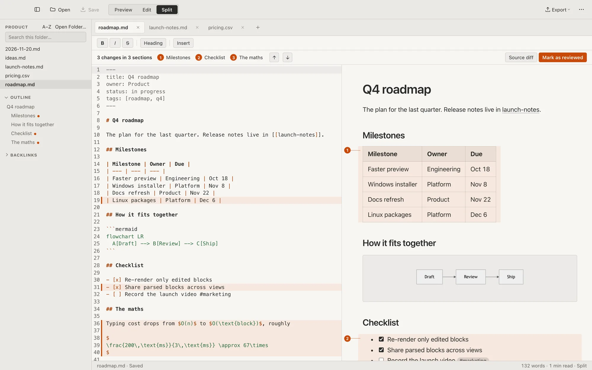
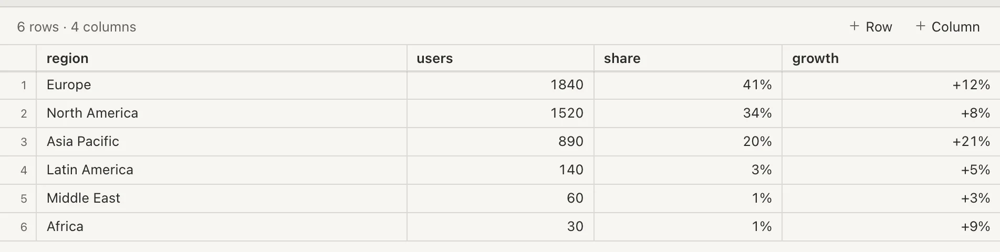

Sheet 1 · OverviewLatest release
Markdown,
opened properly.
A native Markdown app for macOS, Windows and Linux. Double-click a file and it opens formatted. Press ⌘E to edit, and again to read.
Free for macOS, Windows and Linux
All platforms and formats
- 1Formatted readingTables, highlighted code, KaTeX math and Mermaid diagrams, drawn properly.
- 2Change calloutsWhen a file changes after you read it, each change gets a number in the margin.
- 3Tabs and foldersOpen a folder; every file is a tab away, and tabs come back when you relaunch.
- 4OutlineJump by heading. A dot marks each section that changed.
 2
4
1
3
2
4
1
3
Sheet 2 · Editing
Edit in place, or side by side.
⌘E switches to a CodeMirror editor with live formatting: headings, emphasis, links, tables and math look formatted as you type, and the Markdown reappears on the line you're editing. The file stays plain Markdown.
- Split view puts source and preview side by side, scrolling together
- Type
/on an empty line to insert a table, task list, diagram or callout - Paste or drop an image and it's saved next to the document
- Focus mode, typewriter scrolling and spellcheck
- File History keeps a snapshot before every save

Sheet 3 · Notes
A folder of notes becomes a knowledge base.
Open a folder of notes, and an Obsidian vault works as it is. Nothing is locked in: every note stays a plain Markdown file on your disk.
[[Wiki links]]with autocomplete, and backlinks to every note that links here- Embed a note, or one section of it, with
![[Note#Section]] - Tags, hover previews and a graph of linked notes
- Templates and daily notes
- Frontmatter edits as typed properties

Sheet 4 · Change review
See exactly what changed since you last read it.
Markappoly remembers the version of each file you last read. When a teammate's edit arrives with git pull, or an AI agent rewrites a plan, every change is numbered in the margin and listed in the review bar.
- Step through changes with F7; the ones you've seen go hollow
- Hover a change to see what it said before
- Comment on a passage, then copy every comment as Markdown feedback
- One switch connects Claude Code, Codex or Cursor, so files they write open in the background

Sheet 5 · Everything else
The rest of the toolkit.
Data files
CSV and TSV open as an editable table, JSON as labelled fields, JSONL one record per line. Saving rewrites only the values you changed.

Export
Text, single-file HTML, Word, PDF, or Copy as HTML to paste rich text anywhere. Exports match the preview, diagrams and math included. With Pandoc installed you also get RTF, EPUB and LaTeX.
Command line
Install the markappoly command from the app menu, then:
markappoly notes.md
markappoly docs/
claude -p "draft a plan" | markappolyPiped output shows live as it streams.
Sheet 6 · DownloadLatest release
Get Markappoly.
Free and open source under the MIT licence. The app updates itself, asking before it downloads a new version.
| Platform | Download | Notes |
|---|---|---|
| macOS, Apple Silicon | .dmg | Signed and notarized by Apple |
| macOS, Intel | .dmg | Signed and notarized by Apple |
| Windows | .msi · .exe | 64-bit installer |
| Linux | .AppImage · .deb · .rpm | x86_64 |